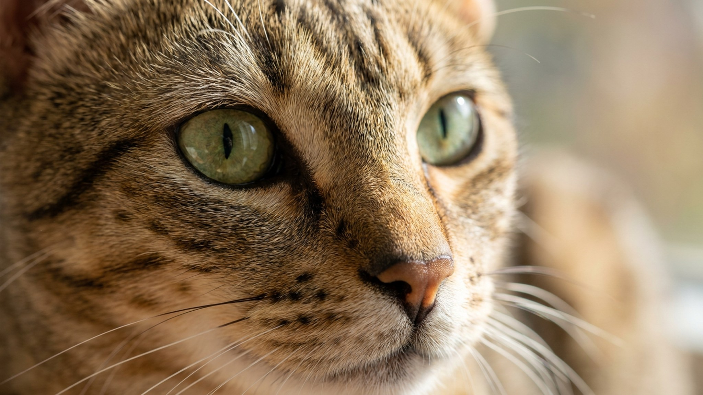

Египетский мау разгоняется до 48 км/ч — быстрее любой другой домашней кошки. Это не просто цифра: за ней стоит анатомия охотника, которую невозможно «выключить» квартирным образом жизни. Владельцы, не знающие этого, получают разгромленные полки, ночные марафоны и кошку, живущую в постоянном напряжении. Ниже — всё, что нужно знать, прежде чем взять мау домой.
🐾 Экономьте на лишних визитах к врачу
Сначала спросите AI-ветеринара в AnimaLife — часто этого достаточно, чтобы понять, нужен ли визит к врачу.
Египетский мау — единственная порода кошек с природными пятнами на шерсти: они не результат селекционного скрещивания с дикими предками, как у бенгальской, а сформировались самостоятельно на протяжении тысячелетий. На древних египетских фресках узнаваемый силуэт с характерным «М» на лбу встречается ещё в 1400 году до н.э.
За скорость отвечает уникальная анатомическая деталь — складка кожи, идущая от колена задней лапы до живота. Она работает как пружина: при беге задние ноги мау уходят далеко вперёд относительно передних, увеличивая длину шага. Эту же складку легко заметить, когда кошка стоит: она заметно «провисает» между задними лапами и боком.
Египетский мау выбирает одного человека и привязывается к нему с интенсивностью, нетипичной для кошек. Такая кошка следует за «своим» по квартире, спит рядом, участвует во всех делах. К посторонним — и даже к другим членам семьи — мау поначалу держит дистанцию. Это не агрессия и не пугливость: просто высокий порог доверия. Новый человек должен заслужить внимание мау — не торопить, не навязываться, позволить кошке самой сократить расстояние.
Египетский мау чувствителен к стрессу сильнее большинства пород. Громкие звуки, резкие изменения распорядка, долгое одиночество — всё это накапливается и выражается в нежелательном поведении: метках, разрушении предметов, чрезмерном вокале. Стабильный режим — не прихоть, а базовая потребность этой кошки.
Мау не устраивает роль «диванного украшения». Без выхода для энергии кошка начинает охотиться за тем, что есть: руками, ногами, шторами, всем, что движется. Правило простое: чем меньше вертикального пространства и охотничьих игр, тем больше проблем с поведением.
Египетский мау плохо переносит продолжительное одиночество. Если кошка весь день одна, а вечером не получает качественного игрового взаимодействия, она входит в режим хронического стресса. Внешне это выглядит как «плохое поведение» — на самом деле это сигнал.
Второй питомец может помочь, но не всегда: мау избирателен и может долго не принять незнакомую кошку. Знакомство нужно проводить медленно, через запаховый обмен и постепенное расширение общей территории. Активная занятость хозяина и регулярные игровые ритуалы важнее любого компаньона.
Египетский мау — кошка для людей, готовых выстраивать с ней отношения. Взамен — абсолютная преданность и личность, которую невозможно спутать ни с одной другой породой.
🐾 Всё о вашем питомце — в одном приложении
AI-ветеринар, дневник, напоминания о прививках и уходе. Установите AnimaLife — это бесплатно, в Telegram и MAX.
🐾 Понравился разбор?
Подпишитесь на канал — каждый день разбираем по одному тревожному симптому у кошек и собак: что в пределах нормы, а когда пора к врачу. Подпишитесь, чтобы не пропустить разбор, который может спасти здоровье вашего питомца.
Материал носит информационный характер и не заменяет очную консультацию ветеринара.